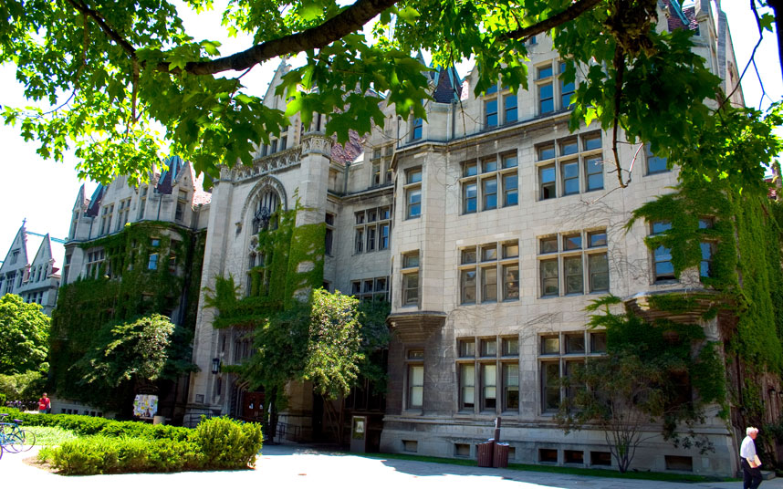

افضل 10 جامعات في العالم

معهد ماساتشوستس للتقنية :هي جامعة بمدينة كامبريدج بولاية ماساتشوستس تأسست عام 1861. ويعتبر هذا المعهد من المعاهد المتألقة عالمياً. وقد عمل بالمعهد العديد من العلماء الكبار أمثال نوربرت فينر ؛ مهمته الأساسية هي التعليم والبحث في التطبيقات العملية للعلوم والتقنية، وينقسم المعهد إلى خمسة مدارس وكلية واحدة تحتوي على 34 تخصص أكاديمي و 53 مختبرًا. لعب المعهد دورًا رئيسيًا في هندسة الطب الحيوي وفي تطوير الحواسيب وفي أجهزة الملاحة المستخدمة في القذائف والمركبات الفضائية. ويبلغ عدد الطلبة فيه 10,000 طالبًا من جنسيات متعددة. وتشتهر هيئة التدريس في المعهد والمكونة من 960 عضوًا بالتفوق والامتياز في مجال الأبحاث التقنية المتقدمة وتطبيقاتها، حيث نال 64 منهم جائزة نوبل
جامعة هارفارد :تعتبر أقدم وأعرق الجامعات الأمريكية، وأحد أقدم جامعات العالم، ومن أفضل جامعات العالم، وأكبر جامعة في العالم من حيث مبلغ الوقف والمساحة والتجهيزات، وأحد الجامعات الثمان في رابطة اللبلاب. تقع في مدينة كامبردج بولاية ماساتشوستس الأمريكية. أسسها القس البروتستانتي جون هارفارد عام 1636 لتناظر جامعتي كامبريدج وأوكسفورد في بريطانيا.تعد الجامعة من أحد أصعب جامعات العالم في قبول الطلبة
جامعة كامبريدج :ومن المعروف أن جامعة كامبريدج هي الجامعة الثانية قُدمًا على مستوى العالم الناطق باللغة الإنجليزية. تعتبر من أميز الجامعات في العالم. تأسست عام 1209.وحصلت على 89 جائزة نوبل وهي أكثر جامعات العالم حصولا على جوائز نوبل
جامعه لندن :تعدّ أكبر جامعة تقليدية في بريطانيا و أوروبا، وتضم الجامعة المفتوحة التي ليس لديها فصول، ويتمُّ التعليم فيها من خلال المذياع والتلفاز والمراسلات، ولديها أكبر عدد من الطلاب من أي جامعة تقليدية أخرى إذ بها نحو 60,000 طالب يقيمون بمبانيها، ونحو 24,000 طالب يسكنون خارجها. وتتكون جامعة لندن من العديد من المؤسسات التعليمية، إما داخل لندن أو بالقرب منها، وتتكون من 30 كلية، ولكل منها هيئتها الإدارية، كما تضم 10 معاهد إضافية أقامتها إدارة الجامعة
إمبريال كوليدج لندن :جامعة إمبريال كوليدج لندن هي جامعة بحثية عامة في لندن بالمملكة المتحدة، وإحدى الجامعات الأوروبية الأعضاء برابطة الجامعات البحثية الأوروبية. تتخصص في العلوم والطب والهندسة وإدارة الأعمال. أصبحت جامعة مستقلة عام 2007 تزامناً مع مرور 100 عام على تأسيسها، حيث كانت إحدى كليات جامعة لندن
جامعة اوكسفورد :تعدّ أقدم جامعة في العالم الغربي المتحدث بالإنجليزية حيث تعتبر من أفضل وأعرق الجامعات في العالم كما أنها واحدة من أفضل جامعتين على مستوى بريطانيا. وتقع في مدينة أكسفورد في إنجلترا
جامعة ستانفورد :هي جامعة أمريكية خاصة تم افتتاحها في 1 أكتوبر 1891، تقع في جنوب شرق سان فرانسيسكو بحوالي 37 ميلاً وشمال غرب سان خوسيه بحوالي 20 ميلاً في ولاية كاليفورنيا بالقرب من مدينة بالو ألتو.
تعتبر واحدة من أفضل الجامعات بالعالم من المعروف هنا أنها تدرج في موقعها الالكتروني كورسات متكاملة بالفيديو لعدد من المواد , مرفق معها كتب مقروءة لما يقوله الاستاذ . وأيضا الامتحانات و الواجبات المنزلية “home works” مما تعد فرصة مثالية للدراسة لكل من يعاني عدم فهم لمادة ما في أي مكان في العالم
جامعة ييل :هي جامعة خاصة تقع في كنتيكت. تأسست عام 1701. تعتبر ثالث أقدم معهد للتعليم العالي في الولايات المتحدة الأمريكية. وهي إحدى أعضاء رابطة اللبلاب لأعرق جامعات أمريكا.وربما يشهد التاريخ على أن الحصول على شهادة من هذه الجامعة بمثابة المفتاح السحري للثراء والمناصب الحكومية الحساسة.ويرجع السبب إلى أن أساتذة الجامعة معروفون بتفانيهم في خدمة طلابهم وهذا التزام تشتهر به ييل كثيراً، حيث يقوم أشهر أساتذتها المرموقين بتدريس مواد السنوات الأولى خاصة لطلاب البكالوريوس

جامعة شيكاغو :هي جامعة خاصة تقع في ضاحية هايد بارك وتم إنشائها عام 1890. وكان أول رئيس وعضو من أعضاء هيئة التدريس للجامعة البروفيسور ويليام ريني هاربر
معهد كاليفورنيا للتقنية :عتبر من أكبر الجامعات البحثية في العالم، ويعتبر جامعة خاصة مفتوحة، أسس في مدينة باسادينا الأميركية بولاية كاليفورنيا إحدى أكبر الولايات الأميركية عام 1891، حصل 31 خريج من هذا المعهد على جائزة نوبل.
يذكر أن العالم المصري أحمد زويل كان أستاذا في هذا المعهد
لوحه الاعلانات
جميع الحقوق محفوضه